Self-Supervised Flow Matching for Scalable Multi-Modal Synthesis
외부 encoder 없이 flow matching 안에서 표현을 학습하는 Self-Flow
Hila Chefer*, Patrick Esser*, Dominik Lorenz, Dustin Podell, Vikash Raja, Vinh Tong, Antonio Torralba, Robin RombachBlack Forest Labs, MIT. Preprint, 2026-03-04. * 공동 1저자

오희석한성대학교Visual Intelligence Lab
VILAB 논문 세미나

오늘은 Black Forest Labs의 Self-Flow를 소개합니다. 생성 모델이 외부 encoder 없이 스스로 표현을 배우게 하는 방법이고, 그 근거가 어디까지인지를 함께 보겠습니다.
Self-Flow의 학습 방식과 실험
외부 encoder 없이, noise 수준이 다른 두 입력의 표현을 맞춰 flow matching 안에서 표현을 학습한다.
Dual-Timestep Scheduling
토큰마다 두 timestep 중 하나를 배정
EMA teacher self-distillation
noise가 더 적은 입력에서 얻은 teacher의 깊은 층 feature를 정렬 목표로 사용
이미지·비디오·오디오
모달리티별 학습과 공유 backbone 실험
같은 이미지를 두 번 입력할 때 noise 수준을 달리하고, 두 입력의 feature를 맞추는 방법입니다.
기여는 세 가지입니다. 토큰마다 두 timestep 중 하나를 배정하는 Dual-Timestep Scheduling, noise가 더 적은 입력에서 얻은 EMA teacher의 feature에 맞추는 self-distillation, 그리고 이미지·비디오·오디오 실험입니다.
생성 모델의 표현 정렬 방법
| 방법 | student feature | 정렬 목표 | teacher | 외부 모델 |
|---|---|---|---|---|
| REPA | 중간층 | 외부 encoder feature | 고정된 DINOv2 등 | 있음 |
| SRA | 앞쪽 층, noise 큼 | 뒤쪽 층, noise 작음 | EMA teacher | 없음 |
| LayerSync | 중간층의 약한 feature | 의미 정보가 풍부한 중간층 feature | 모델 자신 | 없음 |
| Self-Flow | 중간층, 두 timestep 입력 | 깊은 층, 입력 | EMA teacher | 없음 |
SRA·LayerSync의 정렬 대상은 각 논문 abstract에서 확인했다(Jiang et al. 2025, Haghighi et al. 2025).
질문: Self-Flow는 왜 작동하고, 그 설명은 어디까지 실험으로 뒷받침되는가?
생성 모델에 표현 학습을 추가하는 방법은 크게 두 갈래입니다. REPA는 DINOv2 같은 외부 encoder의 feature에 맞추고, SRA와 LayerSync는 외부 모델 없이 같은 모델의 다른 층에서 얻은 feature에 맞춥니다.
Self-Flow도 외부 모델을 쓰지 않습니다. SRA와 다른 점은 student 입력에 두 timestep을 토큰별로 섞고, teacher에는 둘 중 더 낮은 timestep을 모든 토큰에 준다는 점입니다. Self-Flow가 왜 작동하는지, 그 설명을 실험이 어디까지 뒷받침하는지 살펴보겠습니다.
외부 encoder 크기와 생성 FID
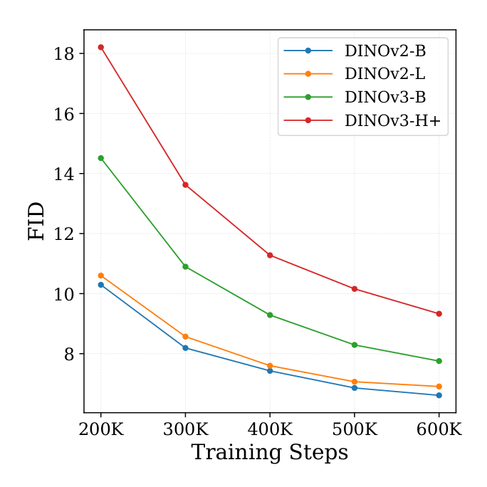
- DINOv2-B → DINOv2-L → DINOv3-B → DINOv3-H+ 순으로 encoder 교체
- 200K–600K step 내내 DINOv2-B의 FID가 가장 낮고 DINOv3-H+가 가장 높음
- 해석저자 설명: 고정된 외부 표현이 생성 목표와 어긋나 병목이 된다
논문의 출발점이 된 실험입니다. REPA에서 정렬에 쓰는 encoder를 DINOv2-B에서 DINOv3-H+까지 더 강한 모델로 차례로 바꿨더니, FID는 오히려 나빠졌습니다.
저자들은 고정된 외부 표현이 생성 목표와 맞지 않아 병목이 된다고 설명합니다. 이 설명 자체는 실험으로 확인한 것이 아니라 해석이라는 점을 짚어 두겠습니다.
Rectified flow와 토큰 규격
- clean token sequence
- Gaussian noise
- 0이면 데이터, 1이면 noise. 샘플마다 하나
| 모달리티 | AE | 토큰 | 차원 |
|---|---|---|---|
| 이미지 256×256 | SD-VAE | 256 | 16 |
| FLUX.2 AE | 256 | 128 | |
| RAE | 256 | 768 | |
| 비디오 45프레임·192p | Wan2.2 | 약 3K | 48 |
| 오디오 10초 | Songbloom | 250 | 64 |
App. A.2 SD-VAE·FLUX.2 AE는 2×2 patch로 RAE와 같이 한 변을 16배 압축
기본 틀은 rectified flow입니다. 데이터와 noise를 직선으로 잇고, 그 사이의 velocity를 예측합니다.
샘플마다 timestep t를 하나만 씁니다. 이미지 256토큰이든 비디오 약 3천 토큰이든 모든 토큰의 noise 수준은 같습니다.
토큰별 noise 배치 방식 네 가지
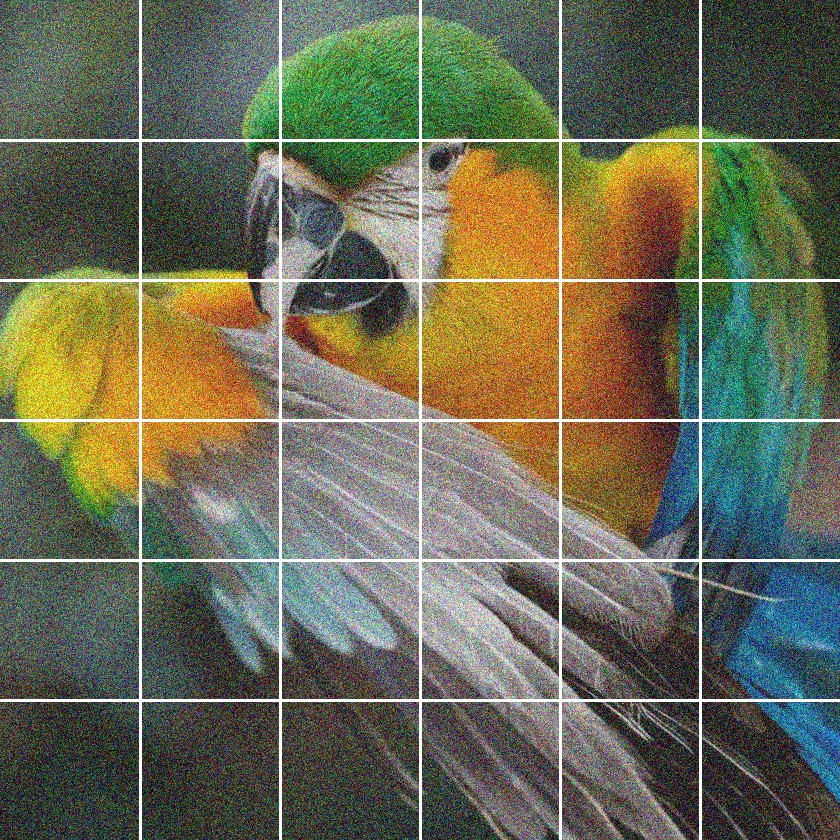
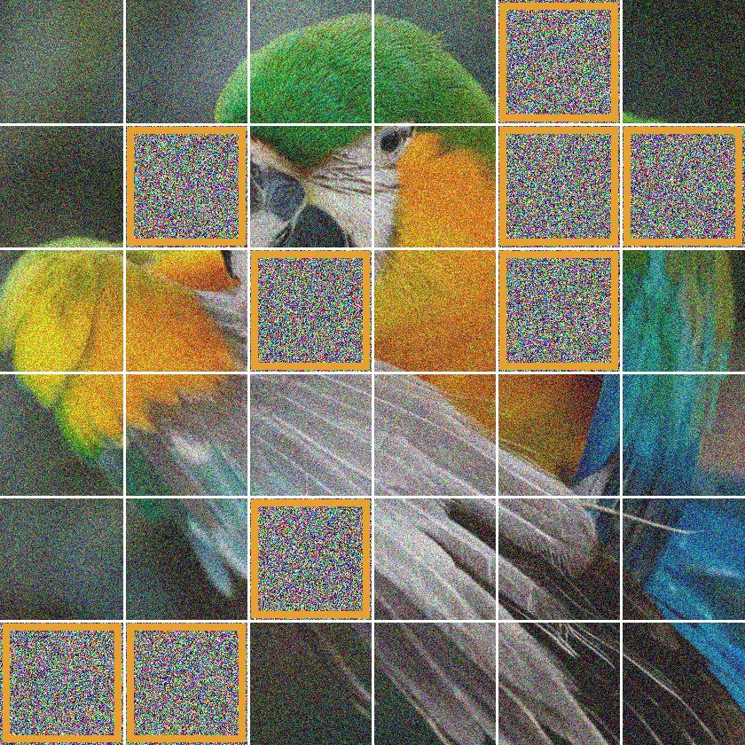
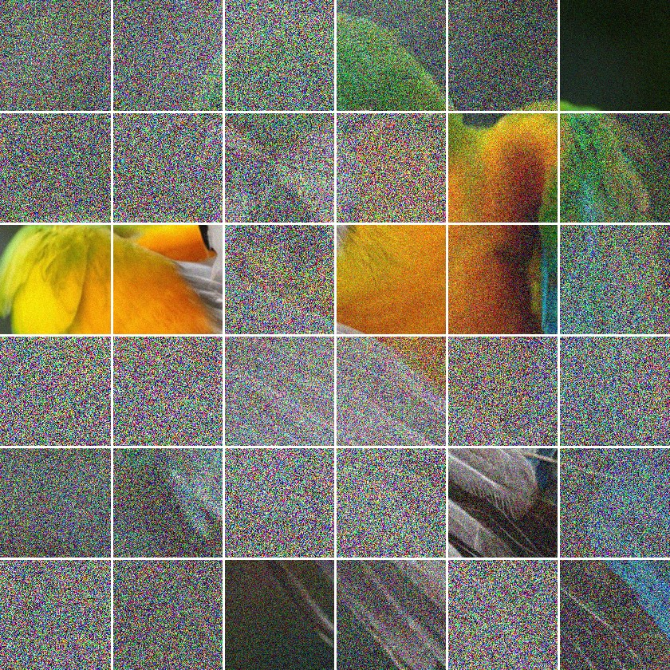
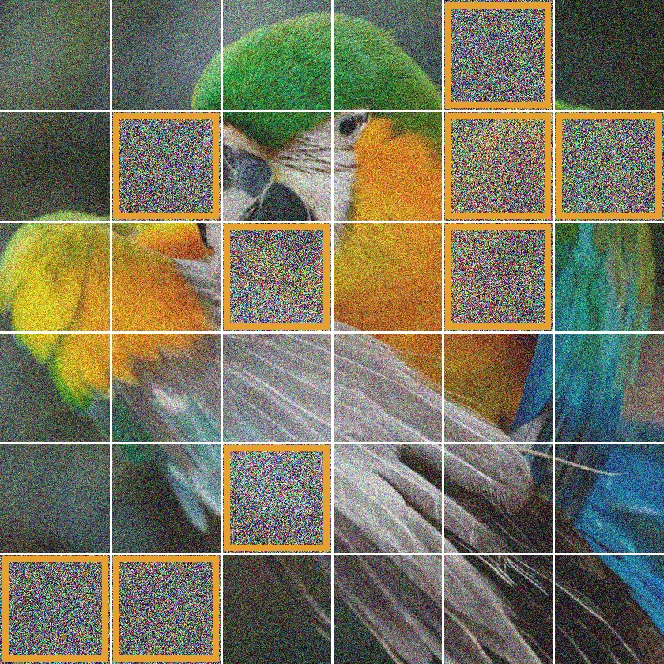
격자는 설명용 예시: Fig. 1의 Self-Flow 이미지에 픽셀 noise를 섞었다(실제 학습은 latent).
모든 토큰에 같은
샘플의 모든 토큰이 같은 noise 수준. Fig. 2(b)의 기준선.
일부 토큰을 로
가린 토큰은 pure noise, 나머지는 공통 . Vanilla보다 FID 악화.
토큰마다 독립된
토큰별로 timestep을 따로 뽑는다. Vanilla보다 FID 악화.
두 timestep , 배정
representation loss 없이도 vanilla보다 FID가 소폭 개선.
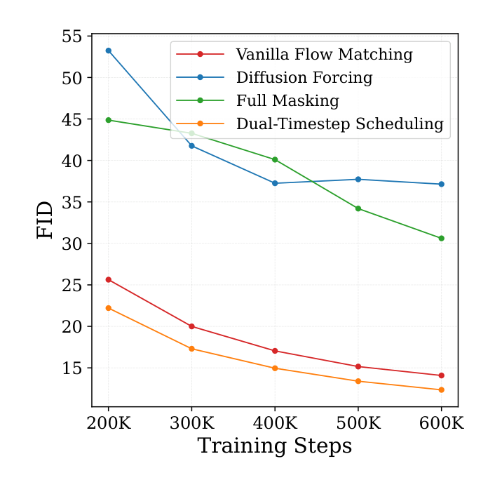
같은 이미지에 noise를 넣는 방식을 네 가지로 바꿔 보겠습니다. [1] 먼저 vanilla입니다. 모든 토큰에 같은 t를 줍니다.
오른쪽 그래프에서 [2] 일부 토큰을 완전히 가리는 full masking과 [3] 토큰마다 timestep을 따로 뽑는 diffusion forcing은 모두 vanilla보다 FID가 높습니다. 저자들은 추론할 때 모든 토큰의 noise 수준이 같은데 학습할 때만 다르게 주면 그 차이가 문제가 된다고 설명합니다.
[4] Dual-Timestep은 timestep을 두 개만 뽑아 토큰마다 둘 중 하나를 배정합니다. representation loss 없이도 이 방식만으로 FID가 조금 좋아졌습니다.
Dual-Timestep Scheduling
- 1
같은 분포에서 timestep을 두 번 뽑는다
- 2
,
- 3
(), 아니면
| 이미지 | 비디오 | 오디오 | |
|---|---|---|---|
| 두 번째 timestep 비율 | 0.25 | 0.10 | 0.50 |
timestep 조건을 scalar에서 토큰별 벡터 로 확장. 비디오에서는 시간 중복 때문에 두 번째 timestep 비율을 0.10으로 설정(App. A.3).
Dual-Timestep에서는 같은 분포에서 timestep을 두 번 뽑아 t와 s로 둡니다. 토큰마다 확률 R_M으로 s를 배정하고, 나머지 토큰에는 t를 줍니다.
두 값이 같은 분포에서 나오므로 토큰 하나만 보면 timestep 분포는 vanilla와 같습니다. 논문은 이렇게 하면 토큰마다 따로 뽑는 방식보다 추론 조건과의 차이를 줄이면서 한 입력에 noise 수준이 다른 토큰을 섞을 수 있다고 설명합니다. 비율은 이미지 0.25, 비디오 0.10, 오디오 0.50입니다.
EMA teacher와 학습 loss
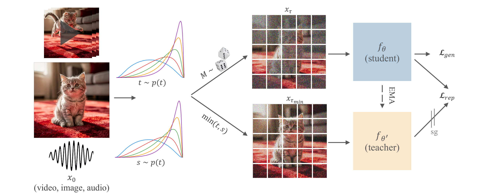
- teacher 입력: 모든 토큰에
- 층 , (SiT-XL에서 8, 20)
- EMA decay 0.9999, = 0.8
- projection 약 10M 추가
두 입력의 noise 수준 차이를 학습에 씁니다. student는 두 timestep이 섞인 입력을 받고, EMA teacher는 모든 토큰에 더 낮은 timestep을 적용해 noise를 줄인 입력을 받습니다.
student 중간층의 feature를 projection한 결과가 cosine 기준으로 teacher의 깊은 층 feature에 가까워지도록 학습합니다. 이 loss에 γ 0.8을 곱해 생성 loss에 더합니다. student는 noise가 적은 토큰을 단서로 noise가 많은 토큰의 feature를 추론해야 합니다.
ImageNet 256×256 비교
| 모델 | step | FID ↓ | sFID ↓ | IS ↑ | Pre. ↑ | Rec. ↑ |
|---|---|---|---|---|---|---|
| SD-VAE | ||||||
| SiT-XL/2 | 7M | 8.3 | 6.30 | 130.57 | 0.69 | 0.67 |
| SRA | 4M | 7.27 | 5.87 | 143.06 | 0.69 | 0.68 |
| REPA | 4M | 5.89 | 5.73 | 157.66 | 0.70 | 0.69 |
| Self-Flow | 4M | 5.70 | 4.97 | 151.40 | 0.72 | 0.67 |
| RAE | ||||||
| RAE | 1M | 3.24 | 6.73 | 218.53 | 0.83 | 0.54 |
| RAE + Self-Flow | 1M | 2.95 | 5.50 | 222.34 | 0.84 | 0.56 |
Table 1 SiT-XL 약 675M, no CFG. 굵은 글씨는 같은 AE 안에서 가장 좋은 값. SD-VAE에서 REPA와의 FID 순위는 2M–4M step 사이에 바뀐다(Fig. 20a).
ImageNet 결과입니다. SD-VAE에서 4M step 기준 Self-Flow의 FID는 5.70으로, DINOv2에 정렬한 REPA의 5.89보다 0.19 낮습니다. 다만 IS와 Recall은 REPA가 더 높습니다.
RAE와 같은 semantic autoencoder를 써도 FID가 3.24에서 2.95로 내려갔습니다. 모두 CFG 없이 측정한 수치입니다.
Text-to-image 생성 지표
Table 2 약 625M, 내부 20M 쌍, SD-VAE, no CFG, 50 ODE steps. sFID는 SRA 8.05, REPA–SigLIP 2 8.13, Self-Flow 8.14.
해석Fig. 1(a)의 약 2.8배는 REPA의 1M step FID에 도달하는 데 필요한 step 수를 비교한 값으로, teacher forward 비용은 포함하지 않는다.
Text-to-image에서도 Self-Flow의 FID가 3.61로 가장 낮습니다. DINOv2 feature로 잰 거리인 FD-DINO도 DINOv2에 직접 정렬한 REPA보다 낮습니다.
표지의 2.8배 빠른 수렴은 같은 FID에 도달하기까지 필요한 step 수를 비교한 결과입니다. Self-Flow는 매 step teacher forward를 한 번 더 하므로, 연산량으로 비교하면 그 배율이 더 작아진다는 것이 제 해석입니다.
비디오와 오디오 생성 지표
| 비디오 | FVD ↓ | FID ↓ |
|---|---|---|
| Vanilla FM | 50.95 | 9.28 |
| SRA | 49.75 | 9.02 |
| REPA–DINOv2 | 49.59 | 9.39 |
| REPA–Depth Anything 3 | 51.52 | 9.85 |
| REPA–V-JEPA 2 | 53.55 | 9.91 |
| Self-Flow | 47.81 | 8.92 |
Table 3 내부 6M 영상, Wan2.2 AE, 45프레임·192p, 600K step, 프레임별 FID. 학습 timestep의 5%는 [0.95, 1.00]에서 뽑는다(App. C).
| 오디오 FAD | CLAP ↓ | CLAP-M ↓ | CLAP-A ↓ | trainshift |
|---|---|---|---|---|
| Vanilla FM | 148.874 | 0.1695 | 0.1059 | 0.75 |
| SRA | 147.215 | 0.1664 | 0.1034 | 0.75 |
| REPA–MERT | 148.883 | 0.1677 | 0.1040 | 0.75 |
| Self-Flow | 145.645 | 0.1634 | 0.1001 | 1.0 |
Table 4·5 FMA 10초, Songbloom AE, 350K step. 방법마다 trainshift를 골랐고(App. B), Self-Flow의 0.50도 탐색으로 정했다. 모든 지표 no CFG.
비디오에서는 Self-Flow의 FVD가 47.81로 가장 낮았습니다. 비디오 전용 encoder인 V-JEPA 2나 깊이 추정 모델 Depth Anything 3에 정렬한 REPA의 FVD는 오히려 vanilla보다 높았습니다.
다만 비디오를 학습할 때는 timestep의 5%를 noise가 매우 높은 구간에서 따로 뽑습니다. 이 별도 샘플링을 빼면 Self-Flow의 프레임 FID가 나빠집니다. 이 결과는 분석에서 다시 보겠습니다.
오디오의 FAD 지표 세 가지 모두 Self-Flow가 가장 낮습니다. 표 오른쪽 열에서 보듯 Self-Flow만 trainshift가 1.0입니다. 이 차이는 토론에서 다시 다루겠습니다.
공유 backbone과 loss 가중치
| 가중치 (이미지, 비디오, 오디오) | 이미지 ΔFID ↓ | 비디오 ΔFVD ↓ | 오디오 ΔFAD (CLAP) ↓ |
|---|---|---|---|
| (0.067, 0.319, 0.614) | −0.35 | −6.6 | −3.2 |
| (0.105, 0.506, 0.389) | −0.26 | −3.8 | −1.2 |
| (0.131, 0.628, 0.241) | −0.16 | −4.7 | −2.7 |
| (0.196, 0.079, 0.725) | −0.08 | −4.0 | −4.8 |
| (0.308, 0.123, 0.569) | −0.09 | −4.3 | −3.8 |
Table 6 Δ = Self-Flow − Vanilla FM, 음수가 좋음. 약 625M, 1M step, no CFG, 이미지는 FLUX.2 AE. 강조 행(video-weighted): FID 3.35 → 3.19, FVD 62.7 → 58, FAD 160.1 → 157.4. 이 실험의 대조군은 Vanilla FM뿐이다.
하나의 backbone으로 세 모달리티를 함께 학습했습니다. loss 가중치를 다섯 가지로 바꿔도 세 지표 모두 Self-Flow가 vanilla보다 좋았습니다.
표에서 강조한 행은 비디오에 가중치를 많이 준 설정입니다. 다음 슬라이드의 로봇 실험에서는 이 checkpoint로 모델을 초기화했습니다. 공유 backbone 실험의 비교 대상은 vanilla뿐입니다.
Video-action 전이
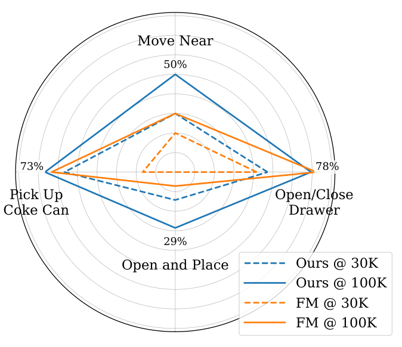
30K step
- 네 과제 모두 Self-Flow가 앞섬
- FM은 Open and Place 0%
100K step
- Pick Up Coke Can: 비슷하게 수렴
- Open/Close Drawer: FM이 소폭 앞섬
- Move Near: Self-Flow 50%, 격차 확대
- Open and Place: Self-Flow 29%, 격차 유지
과제별 평가 15·18·10·7회, checkpoint마다 2회 반복(App. E).
멀티모달 checkpoint에서 시작해 로봇 데이터로 fine-tuning했습니다. 30K step에서는 네 과제 모두 Self-Flow가 앞섰고, FM은 Open and Place에 한 번도 성공하지 못했습니다.
100K step에서는 Coke Can과 Drawer의 결과가 비슷해집니다. 그림으로는 Drawer에서 FM이 조금 앞섭니다. 반면 두 물체를 다루는 Move Near와 순서가 있는 Open and Place에서는 차이가 남습니다. 다만 Open and Place는 7회를 두 번 반복한 14회 평가여서 성공률은 대략적인 경향으로 봐야 합니다.
생성 샘플의 정성 비교
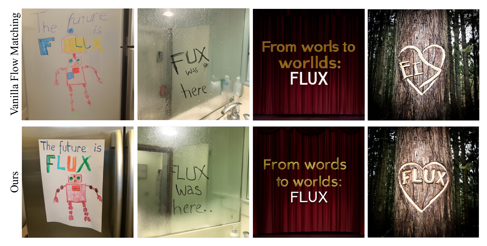
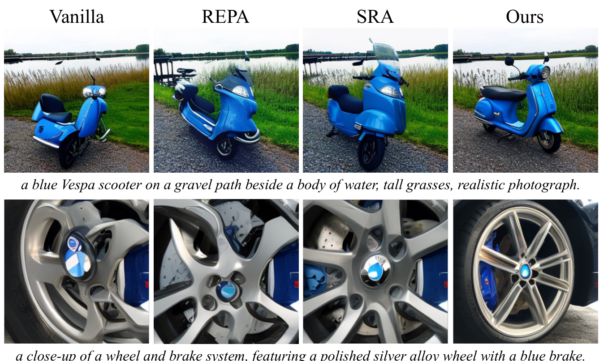
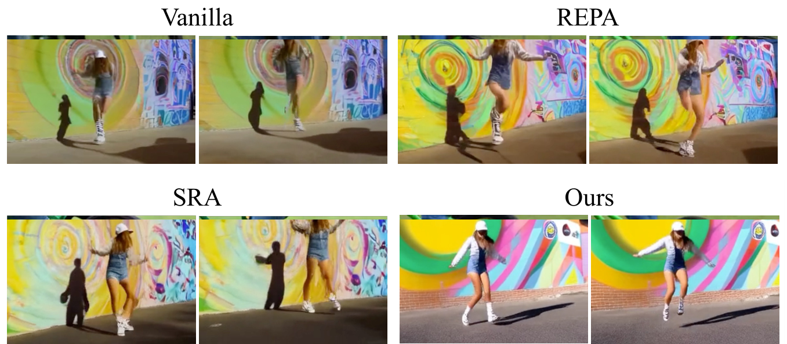
Fig. 9 · 10 정성 샘플은 50 steps, CFG 이미지 3.5, 비디오 5 (App. A.3). 이미지·비디오 탭은 원 그림의 한 예시만 잘라 크게 보였다.
같은 문구의 철자
위 vanilla, 아래 Self-Flow. 4B multi-modal 모델, 고해상도 100K step.
물체 형태와 세부
Vanilla, REPA, SRA, Self-Flow 순. 약 625M T2I.
프레임 사이 일관성
baseline이 생성한 일부 프레임에서 팔다리가 사라진다. 위 Vanilla·REPA, 아래 SRA·Self-Flow. 약 625M, 6M 영상.
정성 결과는 탭으로 하나씩 보겠습니다. [1] 글자는 4B 모델의 결과로, 위가 vanilla, 아래가 Self-Flow입니다. 철자가 맞는지 보시면 됩니다.
[2] 이미지는 Vespa 예시만 잘라 크게 보였습니다. 네 방법의 차체 형태를 비교해 보시면 됩니다. [3] 비디오는 춤 영상 줄을 두 줄로 다시 배치했고, baseline이 생성한 일부 프레임에서 팔다리가 사라집니다. 모두 저자가 고른 예시라는 점은 감안해야 합니다.
모델 크기와 학습 FLOPs
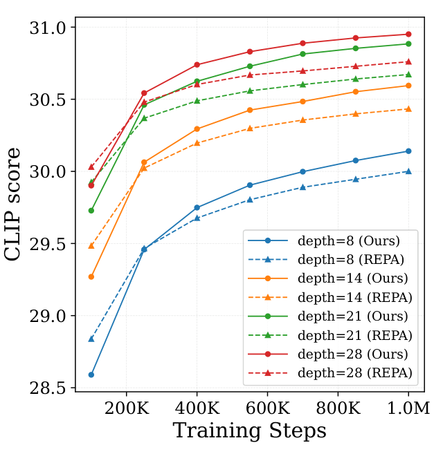
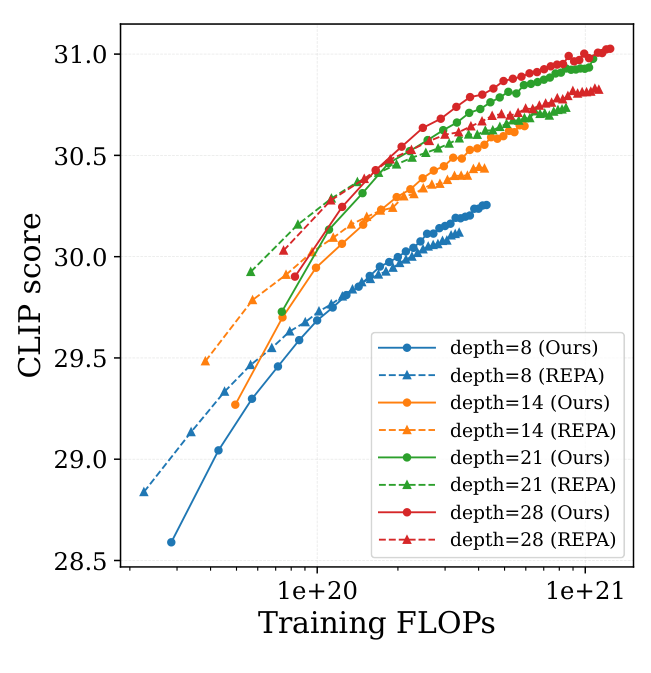
Fig. 6 290M, 420M, 625M, 1B = 층 수 8, 14, 21, 28. 내부 T2I 20M 쌍, SD-VAE, no CFG. 비교 지표는 CLIP score뿐이다.
가로축: 학습 step
625M Self-Flow가 1M step에서 1B REPA보다 높은 CLIP score.
가로축: training FLOPs
FLOPs 축에서도 625M Self-Flow가 1B REPA보다 높다. FLOPs 산정 방식은 본문에 없다.
모델 크기를 290M에서 1B까지 키우면서 CLIP score를 비교했습니다. [1] step 축에서 625M Self-Flow가 1B REPA보다 높습니다.
[2] FLOPs를 가로축에 놓아도 앞서 비교한 두 모델 중 Self-Flow의 CLIP score가 더 높습니다. 다만 teacher forward를 FLOPs에 어떻게 반영했는지는 본문에 나오지 않고, 이 sweep에서 보고한 지표는 CLIP score뿐입니다.
층별 ImageNet linear probe
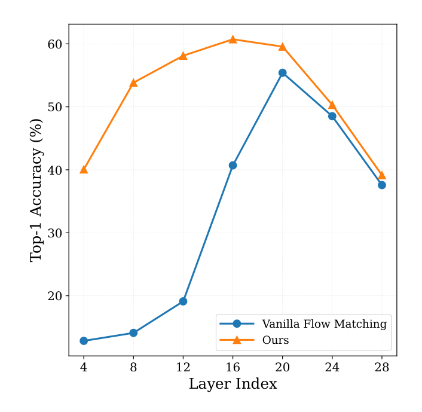
4–16층
- Self-Flow가 크게 높음
- 논문이 강조한 구간
20–28층
- 둘 다 정점을 지나 하락
- 차이는 작아짐
해석linear probe는 클래스 분리도를 잰다. student가 noise 수준이 낮은 토큰을 단서로 쓰는지는 직접 재지 않는다.
feature가 실제로 개선됐는지는 층별 linear probe로 확인했습니다. 모든 층에서 Self-Flow의 정확도가 높고, 특히 4층부터 16층까지 차이가 큽니다.
20층 이후에는 두 모델 모두 정확도가 내려가고 차이도 작아집니다. 또 linear probe는 클래스 분리도를 잴 뿐, 논문이 제시한 기전대로 student가 noise 수준이 낮은 토큰을 쓰는지는 직접 재지 않습니다.
Self-Flow 구성요소 ablation
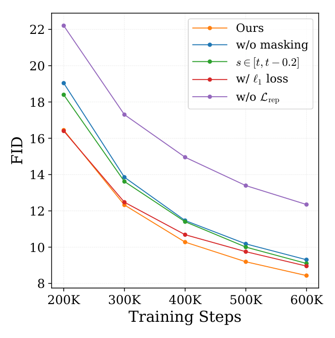
- 제거: FID 4점 넘게 악화
- mask 제거( 유지): 1점 넘게 악화
- 를 보다 최대 0.2 낮은 범위로 제한. mask 제거와 비슷하게 FID 악화.
- cosine 대신 : 후반 FID가 내려가지 않음
수치는 §4.4 본문 서술이고 측정 step과 표는 없다. 에서 후반 FID가 낮아지지 않은 원인(feature norm 증가)은 저자 설명.
구성요소를 하나씩 뺀 결과입니다. representation loss를 빼면 FID가 4점 넘게 나빠집니다. FID 악화 폭이 이 설정에서 가장 큽니다.
representation loss는 두고 mask만 빼도 FID가 1점 넘게 나빠집니다. 이를 근거로 저자들은 단순한 층간 정렬만으로는 부족하다고 주장합니다. 두 번째 timestep을 t와 거의 같게 제한해도 mask를 뺐을 때만큼 FID가 나빠집니다. 이 ablation은 모두 ImageNet에서만 했습니다.
Timestep 분포와 low-SNR 구간
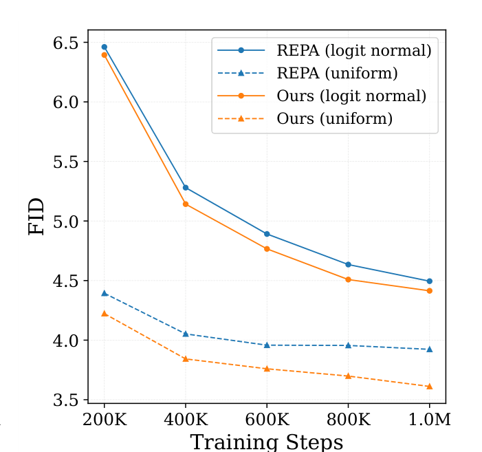
T2I
- uniform에서 두 방법 모두 FID 개선
- Self-Flow와 REPA의 차이도 커짐
비디오
- timestep 5%를 [0.95, 1.00]에서 추출
- 이 처리를 빼면 Self-Flow의 프레임 FID 악화(FVD는 여전히 가장 낮음)
해석저자 가설: Dual-Timestep에서는 샘플 전체의 SNR이 평균 부근에 모여 noise 수준이 높은 구간에서 학습이 덜 이뤄진다.
Self-Flow의 이점은 timestep 분포에 따라 달라집니다. T2I에서 uniform 분포로 바꿨을 때 두 방법 모두 FID가 낮아졌고, FID 차이도 더 커졌습니다.
비디오의 기본 분포에서는 noise 수준이 매우 높은 구간에서 timestep이 거의 뽑히지 않습니다. 그래서 timestep의 5%를 이 구간에서 따로 뽑았습니다. 이 별도 샘플링을 빼면 Self-Flow의 프레임 FID가 나빠집니다. 저자들은 Dual-Timestep을 쓰면 SNR이 평균 부근에 모이기 때문이라고 추정합니다.
한계와 검증 범위
대조군
- 멀티모달, 로봇, 4B 글자, RAE, FLUX.2 AE 실험은 Vanilla FM과만 비교
- 이 설정들에 SRA·REPA 비교는 없다
측정 범위
- scaling에서는 CLIP score만 보고했다. FID 결과나 SRA와의 비교는 없다.
- 구성요소 ablation과 linear probe는 ImageNet만
- sweep과 이미지·비디오 ablation은 없고, 오디오도 별 비교는 따로 보고하지 않았다
비용과 재현
- 학습 step마다 teacher forward 추가. FLOPs 산정식은 없다.
- T2I·T2V는 내부 데이터로 평가
- 공개 코드는 ImageNet 추론뿐, 학습 코드는 없다
결과를 다른 조건에 적용할 때 주의할 점은 세 가지입니다.
먼저 멀티모달, 로봇, 4B 모델 등 규모가 큰 실험은 vanilla만 비교 대상으로 삼았습니다. 둘째로 ablation과 linear probe는 ImageNet에서만 했고, scaling은 CLIP score만 봤습니다. 셋째로 teacher forward 비용이 들고, 공개된 코드는 ImageNet 추론 코드뿐이라 학습을 그대로 재현하기는 어렵습니다.
정리와 토론
정리
- 두 timestep 중 하나를 토큰마다 배정하고, noise가 더 적은 입력에서 얻은 EMA teacher의 feature를 정렬 목표로 사용
- 이미지·비디오·오디오 생성 지표와 ImageNet 앞쪽 층과 중간층의 probe 정확도 개선
- 이득의 크기는 timestep 분포와 평가 조건에 따라 달라짐
토론
- App. A.3은 를 학습 전에 정해 대조군에 똑같이 쓴다고 적었다. 오디오(App. B)는 방법마다 shift를 탐색해 대조군 0.75, Self-Flow 1.0을 골랐다. 같은 trainshift면 FAD 차이는 얼마나 남는가?
- 같은 FAD를 오디오 설정 선택과 최종 결과 보고에 사용했다. 다른 검증 데이터로 설정을 골라도 순위가 같은가?
- 해석Jiang et al.(2026)은 noise가 다른 토큰 사이 attention을 막아도 성능이 유지된다고 보고했다. 이득은 cross-token 정보에서 오는가, noise 축 augmentation에서 오는가?
- 해석teacher forward가 추가된다. 같은 wall-clock 시간을 쓰면 256토큰 이미지와 약 3K 토큰 비디오에서 이득이 얼마나 남는가?
Self-Flow는 두 timestep 중 하나를 토큰마다 배정해 한 입력에 noise 수준이 다른 토큰을 섞고, noise가 더 적은 입력에서 얻은 EMA teacher의 feature를 정렬 목표로 씁니다. 여러 모달리티에서 생성 지표가 좋아졌습니다.
토론 주제는 네 가지입니다. 첫째, 부록 A.3은 noise 분포를 학습 전에 정해 모든 대조군에 똑같이 쓴다고 설명합니다. 그런데 오디오에서는 방법마다 shift를 탐색했고, 대조군은 0.75, Self-Flow는 1.0이 골라졌습니다. 둘째, 오디오 설정을 고를 때 쓴 지표로 최종 결과도 보고했습니다.
셋째, 외부 연구에서 SRA 저자들은 올해 7월에 noise가 다른 토큰 사이의 attention을 막아도 성능이 유지된다고 보고했습니다. 그러면 이득이 정말 noise가 적은 토큰의 정보에서 오는지 다시 물어볼 수 있습니다. 넷째는 제 해석에서 나온 질문입니다. 학습 시간이 같을 때 이득이 얼마나 남는지 비교해 볼 수 있습니다.
감사합니다
Q&A
- Self-Flow · arXiv:2603.06507 · bfl.ai/research/self-flow
- 코드 · github.com/black-forest-labs/Self-Flow (ImageNet 256×256 추론, Hugging Face Hila/Self-Flow)
오희석한성대학교Visual Intelligence Lab
들어 주셔서 감사합니다. 특히 어떤 실험을 더 하면 Self-Flow의 이득이 어디서 오는지 가려낼 수 있을지 의견을 듣고 싶습니다.